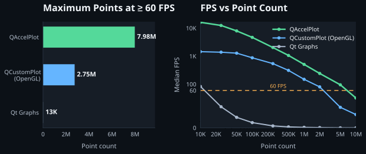

Performance comparison methodology¶

Goal¶
The benchmark finds the maximum number of points each library can sustain at a median of at least 60 frames per second while replacing all data on a single line curve every frame. It also records a fixed 10K-to-10M-point sweep so the shape of each library's scaling curve is visible, rather than reporting only a single threshold.
The comparison includes QAccelPlot, QCustomPlot, and Qt Graphs. All three are built against Qt 6.11.2 and run in sequence on the same machine.
Hardware & OS¶
| Item | Value |
|---|---|
| CPU | AMD Ryzen 9 5900X 12-Core Processor |
| GPU | NVIDIA GeForce GTX 970, driver 32.0.15.6094 |
| RAM | 32 GB |
| OS | Microsoft Windows 10 Pro 10.0.19045, build 19045 |
| Render size | 800 × 600 pixels; redirected texture for Qt Quick, off-screen-positioned native surface for QCustomPlot |
| Graphics API | OpenGL for all three libraries |
QAccelPlot and Qt Graphs use Qt Quick's OpenGL RHI backend. QCustomPlot uses its documented native OpenGL acceleration path because it does not render through Qt Quick's RHI. These are different rendering architectures using the same graphics API family.
Library Versions¶
| Library | Version |
|---|---|
| QAccelPlot | 0.1.0 |
| QCustomPlot | 2.1.1 |
| Qt Graphs | Qt 6.11.2 |
| Qt baseline | 6.11.2 |
Test Setup¶
- One plot containing one line curve is rendered at 800 × 600.
- Two complete sine-wave buffers are generated before warmup. They contain the same X coordinates and slightly phase-shifted Y values. QAccelPlot receives interleaved float XY buffers; Qt Graphs and QCustomPlot receive their native bulk-input representations. The runner alternates the buffers every frame so every frame performs a live full-data update.
std::sin, allocation, and buffer preparation are excluded from timing. The library-facing bulk copy and rendering work are included.- Each run has a 2-second warmup followed by a 10-second measurement window.
- A process-level 45-second timeout prevents an unrenderable candidate from paging indefinitely.
- FPS is calculated in one-second buckets. The median bucket FPS is the result for one run; the final value for a point count is the median of three runs.
- A point count passes when that three-run median is at least 60 FPS.
- The scaling sweep measures 10K, 25K, 50K, 100K, 250K, 500K, 1M, 2M, 5M, and 10M points. A binary search then locates the largest passing count to 1,000-point resolution within 10K–12M. The wider search range prevents the hero maximum from being capped when QAccelPlot still exceeds 60 FPS at 5M points.
QCustomPLot Configuration¶
- OpenGL acceleration is enabled with
setOpenGl(true, 0). - The curve uses a cosmetic pen with an effective width of 1 pixel.
- Antialiasing is disabled with
QCP::aeNone; all elements are explicitly marked non-antialiased. - Adaptive sampling remains enabled.
- Each frame calls the bulk
QCPGraph::setDatapath and performs an immediate replot. The two split key/value buffers are prepared during warmup, outside the measurement window.
Qt Graphs Configuration¶
GraphsViewcontains oneLineSeriesand two fixedValueAxisobjects.- The line width is 1; other series settings remain at their defaults.
- The OpenGL Qt Quick RHI backend is the same backend used by QAccelPlot.
- The complete
QList<QPointF>is sent throughQXYSeries::replaceevery frame. - Rendering is redirected to an 800 × 600 QRhi texture and driven explicitly
with
QQuickRenderControl.
QAccelPlot Configuration¶
- QAccelPlot uses the OpenGL Qt Quick RHI backend and the same offscreen texture size, timing loop, sine-wave definition, and alternating two-buffer update model as Qt Graphs.
- The curve uses
lineWidth: 1with all other settings left at their defaults. - The harness pre-generates native interleaved
floatXY buffers and updatesLineCurvewithsetDataFNoRange(const float *, int). This avoids theQList<QPointF>conversion, allocation, and automatic range scan while still timing the complete copy into QAccelPlot on every frame. - A solid-line vertex cache is built and installed once before warmup with
setDataFNoRangeWithCache. Because the point count and vertex layout do not change, the cache is reused across frames. It is not rebuilt by a worker every frame. Cache preparation is outside timing.